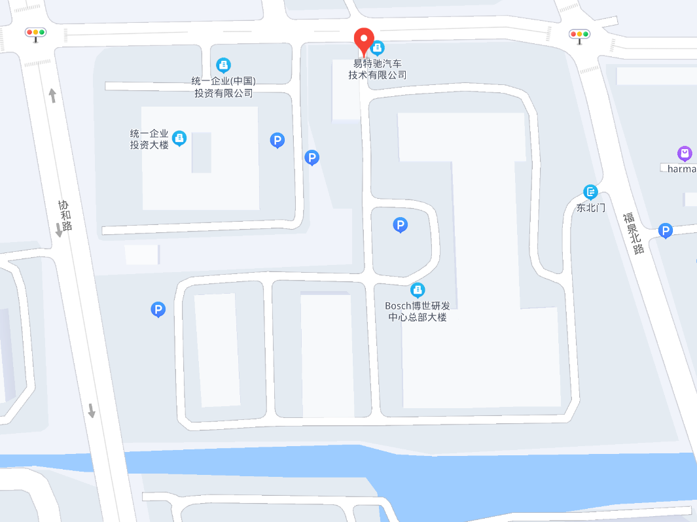
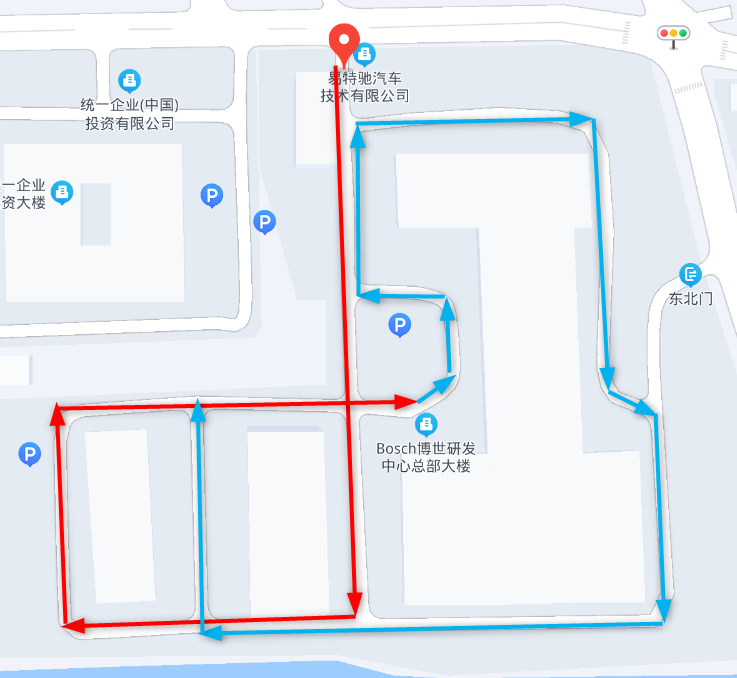
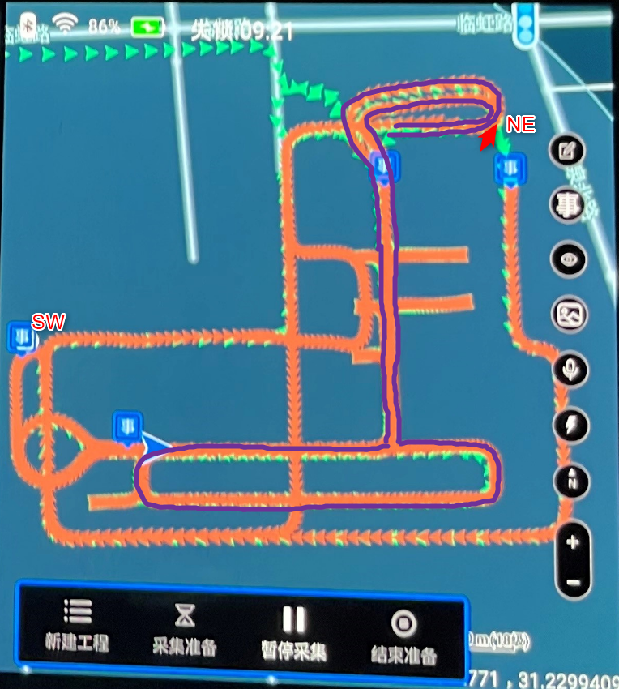
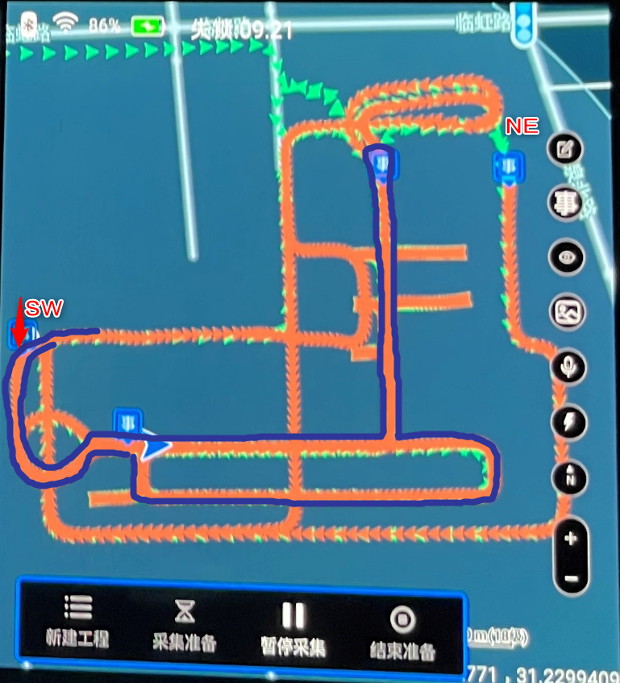

Bosch-SGH
Shanghai Boshi R & D Center Headquarters Building: No. 111, Linhong Road, Mayor of Ning District, Shanghai
Data collection is divided into ground, B1 layer, B2 layer
See Figure (2) and Figure (3).
The parking lot B1, B2 has two entrances: SW and NE. The corresponding trajectory of each entrance is shown in Figure (4) and Figure (5).
Each trajectory needs to be collected in two directions of the front and back; the start-end-end-in-point interchange.That is, the ground, B1 layer, and B2 layers need to collect data of 4 trajectories, a total of 12 trajectories.
When collecting B1 and B2 layers, every time you enter the underground parking lot, you need to bypass more than 30s on the ground.
After the underground parking lot to the ground, it is best to bypass a closed loop on the ground before entering the underground parking lot.
The ground parking space is affected by light. In order to cover the diversity of light changes, the ground collection can be divided into two batches: first collect 2 ground trajectories, then collect B1, B2 layers, and then collect 2 ground trajectories.
When collecting, the turning/head can be borrowed in a wide place or borrowed. The vehicle keeps moving forward and do not reverse.

(1) Bosch R & D headquarters building


(2) ground trajectory 1 (3) ground trajectory 2
 
(4) Parking lot trajectory 1 (5) Parking lot trajectory 2